6.1 Leçon
6.1.2 Cartes statiques avec tmap
Il y a d’autres bibliothèques mais nous étudierons tmap. Voilà pourquoi:
library(sf)
library(tmap)6.1.3 Fonctionnement de base de tmap
Fonctionnement général: tm_shape(données spatiales) + les autres choses qu’on veut faire.
Pour explorer les fonctions de cartographie offertes avec tmap nous utiliserons les données vectorielles sur les limites des régions administratives du Québec ainsi que la taille de leur population.
Données sur les régions administratives
La taille des populations des régions administratives provient de la Banque de données des statistiques officielles sur le Québec (https://bdso.gouv.qc.ca/), et les limites géographiques des régions proviennent du site Données Québec (https://www.donneesquebec.ca/recherche/dataset/decoupages-administratifs)
chemin<-"D:/votrechemin/SCI1031/Module6/Donnees/"
nom_du_fichier <- paste(chemin, "Population/QC_RegAdm_Pop.shp", sep = "")
Q <- st_read(nom_du_fichier)Reading layer `QC_RegAdm_Pop' from data source
`/home/kc/git/inSileco/sci1031/Module6/data/Population/QC_RegAdm_Pop.shp'
using driver `ESRI Shapefile'
Simple feature collection with 17 features and 18 fields
Geometry type: MULTIPOLYGON
Dimension: XY
Bounding box: xmin: -830300 ymin: 118000 xmax: 783300 ymax: 2091000
Projected CRS: NAD83 / Quebec LambertExpliquer chaque colonne

6.1.4 Spécificités cartographiques
Barre d’échelle et rose des vents
Ajout d’un barre d’échelle et d’une rose des vents.
map_Q + # la carte du Québec que nous avons créée plus haut
# ajout d'une barre d'échelle
tm_scale_bar(breaks = c(0,250,500),text.size = 0.8, position=c("right","bottom")) +
# ajout d'une rose des vents
tm_compass(type = "arrow", position = c("right", "top"))
Plusieurs options sont possibles. Utilisez help(tm_scale_bar) ou help(tm_compass) pour connaître les autres arguments possibles pour ces fonctions. Par exemple,
map_Q +
tm_scale_bar(width = 2, position=c("right","bottom")) +
tm_compass(type = "4star", size = 2, show.labels = 2, position = c("right", "top"))Scale bar width set to 0.25 of the map width
Grille et graticules
Grid draws coordinates (in meter?) how is the x=0 determined?
https://geocompr.github.io/post/2019/tmap-grid/
The number of horizontal (x) and vertical (y) lines can be set using the n.x and n.y arguments. Importantly, tmap rounds coordinate values to equally spaced “round” values, so the number of actual labels may be slightly different than set with n.x and n.y.
Q1<-tm_shape(Q)+tm_fill() + tm_grid(labels.size=0.5)
Q2<-tm_shape(Q)+tm_fill() + tm_grid(col="yellow", lwd=3, n.x = 10, n.y = 4)
#Q3<- tm_shape(Q)+ tm_grid(col="yellow", lwd=3, n.x = 3, n.y = 5 )+tm_fill()+tm_borders()
tmap_arrange(Q1,Q2)
Donc c’est la meme chose mais graticule donne NSEW ?
Q1<-tm_shape(Q)+tm_fill() + tm_grid()
Q2<-tm_shape(Q)+tm_fill() + tm_grid(projection=4386) #4326 3857=pas capable ... 32610 idem
Q3<-tm_shape(Q)+tm_fill() + tm_graticules()
tmap_arrange(Q2,Q3)
Q1<-map_Q + tm_graticules()
Q2<-tm_shape(Q)+ tm_graticules(col="blue")+tm_fill()
tmap_arrange(Q1,Q2)

6.1.5 Les polygones
Identification des frontières des polygones
# frontiere des regions admin
tm_shape(Q)+
tm_borders()
# Quebec + frontiere
tm_shape(Q)+
tm_fill()+
tm_borders()
# tm_polygons = tm_fill + tm_borders (condense into one signe function)
tm_shape(Q)+
tm_polygons()
Paramètres esthétiques
# un peu d'esthetique: Figure 8.3 de Lovelace
Q1 <- tm_shape(Q)+tm_fill(col="green")
Q2 <- tm_shape(Q)+tm_fill(col="green", alpha = 0.4) #color transparency
Q3 <- tm_shape(Q)+tm_borders(col="green")
Q4 <- tm_shape(Q)+tm_borders(col="pink", lwd = 4) #line width
Q5 <- tm_shape(Q)+tm_borders(col="blue", lty = 2) #line type
Q6 <- tm_shape(Q)+tm_fill(col="blue", alpha = 0.3) + tm_borders(col="black")
tmap_arrange(Q1,Q2,Q3,Q4,Q5,Q6)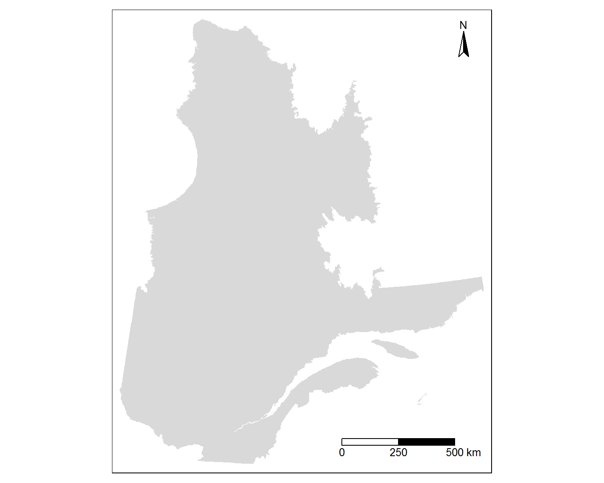
Images des types de lignes Rappel types de couleur
Identification individuelle des polygones
Polygones de couleurs differentes. Il sait qu’on réfère à l’attribut désigné.
tm_shape(Q)+tm_fill(col="NUM_REG", title = "Régions")
On veut créer un autre shapefile uniquement pour la région de L’Ouatouais
Q_Outaouais<-Q[Q$NOM_REG == "Outaouais",]
tm_shape(Q_Outaouais)+tm_fill(col="blue", alpha = 0.4)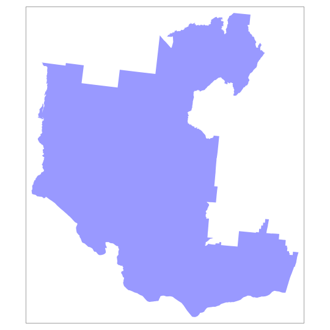
Q1<-tm_shape(Q)+tm_borders(col="black")
Q2<-tm_shape(Q_Outaouais)+tm_fill(col="blue", alpha = 0.4)
Q12<-Q1+Q2
Q3<-tm_shape(Q)+tm_fill()
Q4<-tm_shape(Q_Outaouais)+tm_borders(col="blue", lwd = 4)
Q34<-Q3+Q4
tmap_arrange(Q12,Q34)
6.1.6 Mise en page
La fonction tm_layout permet d’ajuster la mise en page d’une carte et différents éléments de son esthétique. Pour découvrir l’ensemble des arguments possibles tapez la commande help(tm_layout) (ou ?tm_layout) dans votre console R. Certains des arguments utiles sont:
Titre, cadre et couleur du fond
- L’ajout d’un titre (
title), la taille de ce dernier (title.size) et sa position (title.position). - La présence ou l’absence d’un cadre (
frame) et l’épaisseur du trait de celui-ci (frame.lw). - La taille des marges extérieures au cadre (
outer.margins = c(Haut,Droit,Bas,Gauche)oùHaut,Droit,Bas,Gauchesont des chiffres entre 0 (pas de marge) et 1 (marge complète)). - La couleur du fond de la carte (
bg.color) et de l’espace à l’extérieure du cadre (outer.bg.color).
Voici quelques exemples de mise en page qui utilisent ces arguments.
map_Q <- tm_shape(Q)+tm_fill()+tm_borders()
map_Q + tm_layout(title = "Carte du Québec", title.size =0.8, title.position = c("right","top"))
map_Q + tm_layout(frame = FALSE)
map_Q + tm_layout(bg.color = "aquamarine", scale = 2)
map_Q + tm_layout(frame.lwd = 2, outer.margins = c(0, 0.2,0, 0.2), outer.bg.color="lavender")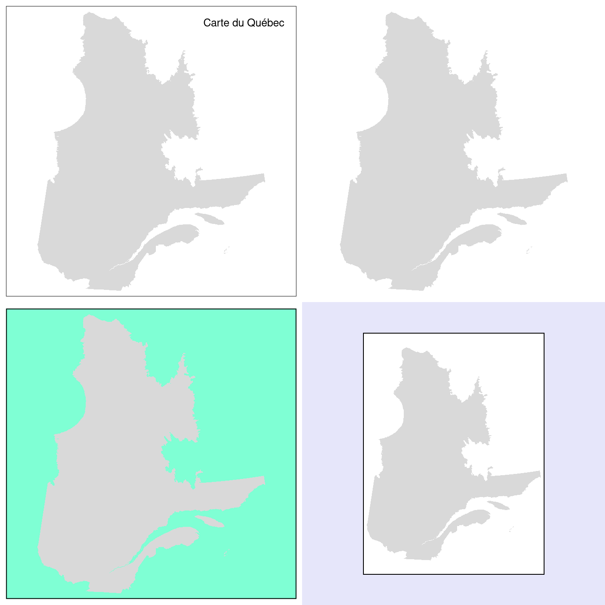
Légende
La fonction tm_layout() permet aussi de configurer l’apparence de la légende. Certains des arguments utiles sont:
- La présence, ou non, d’une légende, (
legend.show- par défaut la légende est affichée). - L’option de placer la légende à l’extérieur du cadre de la figure (
legend.outside). - La position de la légende à l’intérieur (
legend.position) ou à l’extérieur (legend.outside.position) du cadre. Par défaut,la légende est placée dans le coin où il y a le plus d’espace. - L’option d’un mettre un cadre autour de la légende (
legend.frame) et de contrôler pour l’épaisseur du trait (legend.frame.lwd) et pour la couleur de fond de la légende (legend.bg.color) - La police de caractère (
legend.title.fontfamily), la taille des caractères (legend.title.fontface), et la couleur (legend.title.color) du texte et du titre de la légende.
Voici quelques exemples de mise en page de la légende:
tm_shape(Q) +
tm_polygons(col="NOM_REG") +
tm_layout(legend.show = FALSE)
Q2 = tm_shape(Q) +
tm_fill(col="NOM_REG", title = "Régions administratives") +
tm_layout(legend.outside = TRUE)
Q4= tm_shape(Q) +
tm_polygons(col="NUM_REG", title = "Régions administratives", legend.is.portrait=FALSE) +
tm_layout(frame = FALSE, legend.outside = TRUE,
legend.outside.position = "bottom",
legend.outside.size = 0.15,
legend.text.size=0.75)
Q3 = tm_shape(Q) +
tm_fill(col="NOM_REG", title = "Régions administratives") +
tm_layout(bg.color = "black", frame = FALSE, legend.outside = TRUE,
legend.outside.position = "left",
legend.title.fontfamily = "serif",
legend.title.fontface = 2,
legend.title.color = "lightpink",
legend.text.color = "white")Some legend labels were too wide. These labels have been resized to 0.66, 0.65, 0.47, 0.55. Increase legend.width (argument of tm_layout) to make the legend wider and therefore the labels larger.Legend labels were too wide. Therefore, legend.text.size has been set to 0.47. Increase legend.width (argument of tm_layout) to make the legend wider and therefore the labels larger.Some legend labels were too wide. These labels have been resized to 0.66, 0.65, 0.47, 0.55. Increase legend.width (argument of tm_layout) to make the legend wider and therefore the labels larger.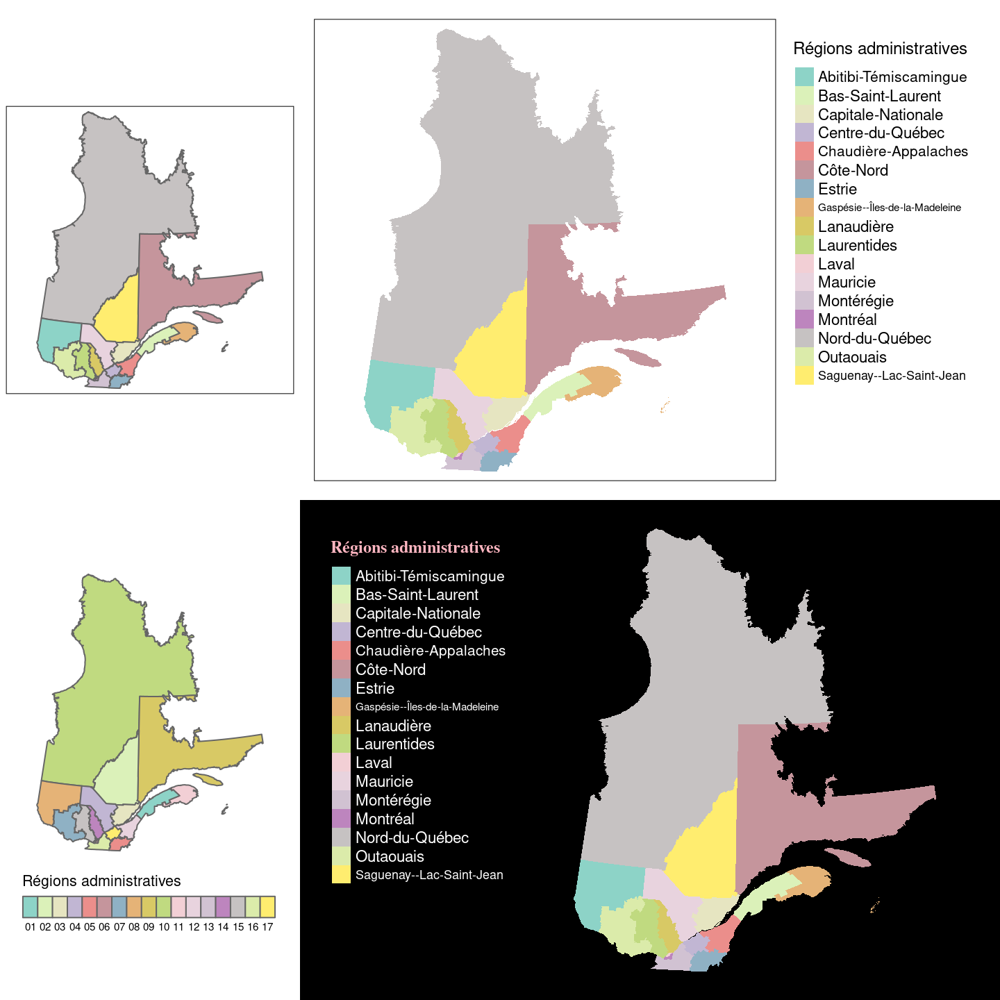
Ajustement des couleurs
e plus, la fonction tm_layout permet d’ajuster les couleurs présentes dans la carte:
- L’argument
aes.colordéfini la couleur de remplissage des polygones, des frontières, du texte, etc. - L’argument
saturationdéfini le niveau de saturation des couleurs. La valeur par défaut est 1, et la valeur 0 donne une représentation en noir et blanc. Il est possible de donner des valeurs supérieures à 1 pour des couleurs très saturées. Il est aussi possible de données des valeurs négatives. - L’argument
sepia.intensityest un nombre entre 0 et 1 qui défini le niveau de “chaleur” des couleurs. Plus sa valeur est grande, plus les couleurs ont une teinte jaune voir brune. La valeur par défaut est 0. - L’argument
aes.palettepermet de changer la palette de couleurs utilisées. La librarie tmap utilise les palettes de couleurs de Color Brewer. Dans le cas d’attributs catégoriques (comme le nom de régions) la palette utilisée par défaut se nommeSet3, mais il est possible de choisir d’autres paletters parmi celles-ci:Accent,Dark2,Paired,Pastel1,Pastel2,Set1, etSet2. Nous reviendrons sur le sujet des palettes un peu plus loin dans cete leçon.
Voici quelques exemples de modification des couleurs:
Q1 = tm_shape(Q)+tm_polygons() + tm_layout(aes.color = c(fill="lightblue",borders="darkgreen"))
Q2 = tm_shape(Q)+tm_polygons(col="NUM_REG") + tm_layout(legend.show = FALSE,
aes.color = c(borders="white"),
saturation = 0)
Q3 = tm_shape(Q)+tm_polygons(col="NUM_REG") + tm_layout(legend.show = FALSE,
sepia.intensity = 0.5)
Q4 = tm_shape(Q)+tm_polygons(col="NUM_REG") + tm_layout(legend.show = FALSE,
aes.palette = list(cat = "Accent"))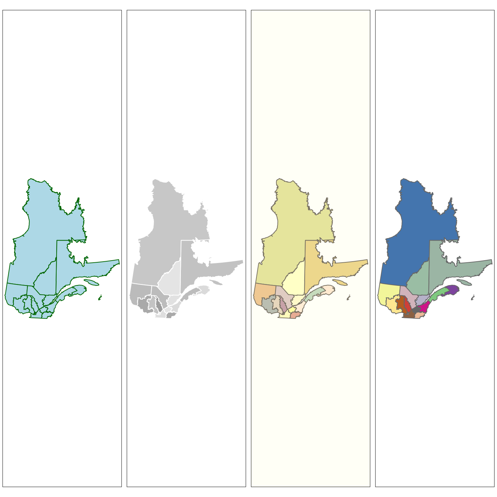
Styles prédéfinis
La librarie tmap contient des styles prédéfinis qu’on appelle avec la fonction tm_style et qui permettent de ne pas avoir à définir individuellement des arguments de la fonction tm_layout.
Voici quelques uns de ces styles prédéfinis.
tm_shape(Q)+tm_polygons(col="NUM_REG") +
tm_style("classic") +
tm_layout(legend.show = FALSE)
tm_shape(Q)+tm_polygons(col="NUM_REG") +
tm_style("bw") +
tm_layout(legend.show = FALSE)
tm_shape(Q)+tm_polygons(col="NUM_REG") +
tm_style("cobalt") +
tm_layout(legend.show = FALSE)
tm_shape(Q)+tm_polygons(col="NUM_REG") +
tm_style("col_blind") +
tm_layout(legend.show = FALSE) 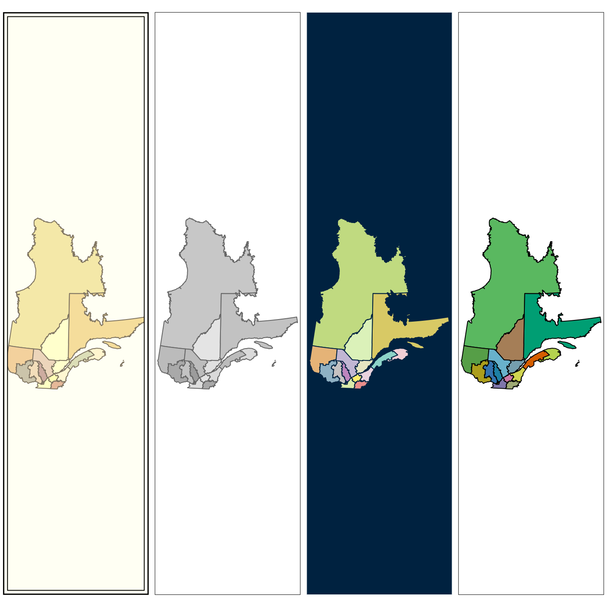
Vous remarquerez que le style col_blind utilise une palette de couleur permettant aux personnes daltoniennes de pouvoir différencier les polygones de couleurs différentes.
6.1.7 Écriture sur une carte
Attention tm_text() ne donne pas les bonnes info ici:https://www.rdocumentation.org/packages/tmap/versions/0.7/topics/tm_text Il faut aller ici: https://rdrr.io/cran/tmap/man/tm_text.html
tm_shape(Q)+tm_polygons(col="NUM_REG") +
tm_style("col_blind") +
tm_layout(legend.show = FALSE, frame = FALSE)+
#tm_shape(Q)+
#tm_polygons(col="NUM_REG",palette="", alpha=0.5, legend.show=FALSE) +
#tm_layout(frame = FALSE)+
tm_text("NUM_REG", size = 0.6,fontface="bold")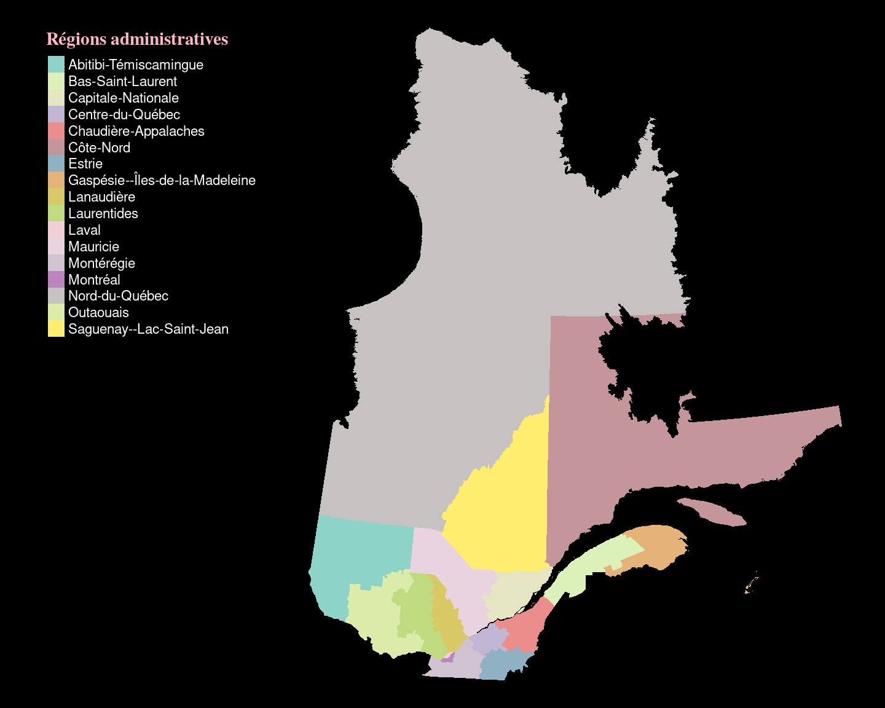
tm_shape(Q)+
tm_polygons()+
tm_layout(aes.color = c(fill="black",borders="white"),frame = FALSE, legend.outside = TRUE, legend.text.size = 0.8)+
tm_text("NUM_REG", col= "NOM_REG", palette = "Paired", size = 0.8, fontface="bold", legend.col.show = TRUE, title.col = "Régions administratives",auto.placement=TRUE, just="right")
6.1.8 Les lignes
Données sur le réseau routier du QC
Importer les données Pas le réseau complet
chemin<-"D:/votrechemin/SCI1031/Module6/Donnees/"
nom_du_fichier <- paste(chemin, "Routes/QC_routes.shp", sep = "")
R <- st_read(nom_du_fichier)Reading layer `QC_routes' from data source
`/home/kc/git/inSileco/sci1031/Module6/data/Routes/QC_routes.shp'
using driver `ESRI Shapefile'
Simple feature collection with 56804 features and 9 fields
Geometry type: LINESTRING
Dimension: XY
Bounding box: xmin: -822900 ymin: 118000 xmax: 526100 ymax: 983200
Projected CRS: NAD83 / Quebec LambertOn superpose les deux shapefiles. Chaque fois qu’on ajouter une tm_shape(Données) les fonctions tm_ qui suivent s’appliquent à ces Données et non aux données antérieures
Probablement plus lent car le fichier est lourd.
tm_shape(Q)+tm_fill()+
tm_shape(R)+tm_lines(col="brown") +
tm_layout(title = "Réseau routier")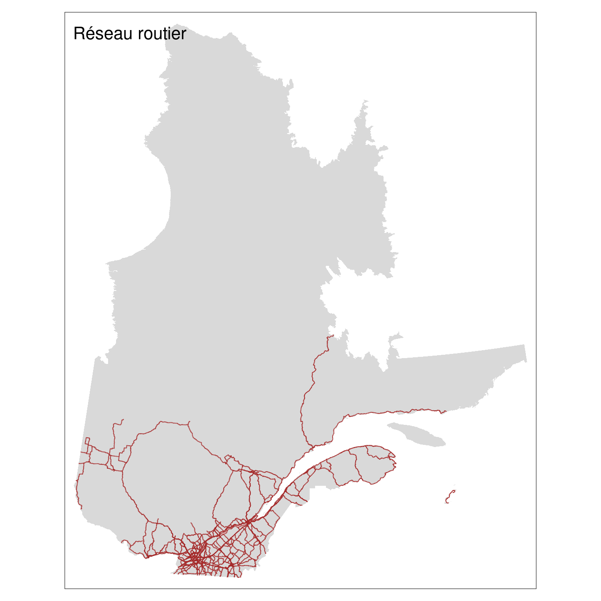
Ce shapefile comprends en fait trois type de routes.
R$ClsRte<-as.factor(R$ClsRte)
levels(R$ClsRte)[1] "Autoroute" "Nationale" "Régionale"pal.col<-c("red","darkgoldenrod4","darkslateblue")
tm_shape(Q)+
tm_fill()+
tm_shape(R)+
tm_lines(col="ClsRte", palette=pal.col, title.col = "Types de route")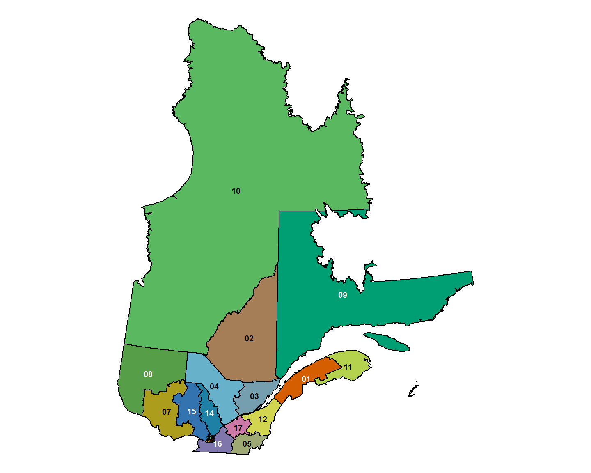
6.1.9 Les points
Lire le shapefile avec les municiaplites du QC
chemin<-"D:/votrechemin/SCI1031/Module6/Donnees/"
nom_du_fichier <- paste(chemin, "Villes/QC_coord_municipalites.shp", sep = "")
V <- st_read(nom_du_fichier)Reading layer `QC_coord_municipalites' from data source `/home/kc/git/inSileco/sci1031/Module6/data/Villes/QC_coord_municipalites.shp'
using driver `ESRI Shapefile'
Simple feature collection with 15 features and 1 field
Geometry type: POINT
Dimension: XY
Bounding box: xmin: -78.91 ymin: 45.41 xmax: -64.47 ymax: 62.41
Geodetic CRS: NAD836.1.10 Données matricielles
Loader la librairie raster
library(raster)Importer les données d’élévation du QC
chemin<-"D:/votrechemin/SCI1031/Module6/Donnees/"
nom_du_fichier <- paste(chemin, "Elevation/QC_Elevation.tif", sep = "")
E <- raster(nom_du_fichier)Expliquer la fonction tm_raster
tm_shape(E)+tm_raster(title = "Élévation (m)",legend.hist = TRUE)+
tm_legend(outside = TRUE, hist.width = 4)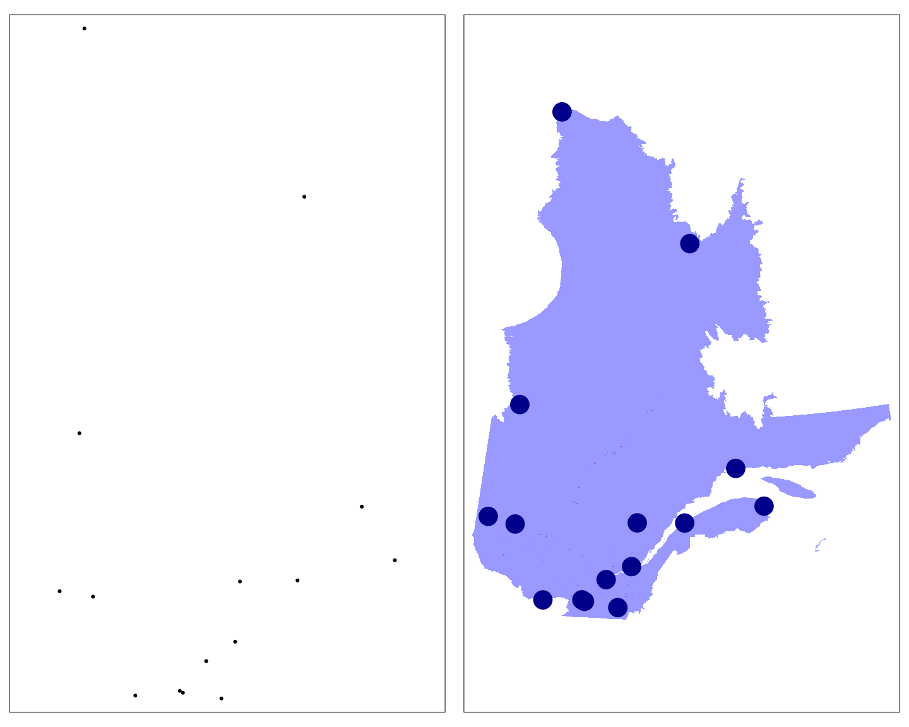
Nous pouvons changer la palette de couleur (quelle est cette palette par défaut au fait?), et décider du nombre de classes. Il faut expliquer que c’est approximatif.
#pal.elevation = colorRampPalette( c("midnightblue","royalblue4","darkolivegreen4","burlywood", "chocolate4"))
pal.elevation = colorRampPalette( c("midnightblue","forestgreen","darkolivegreen4","burlywood", "chocolate4"))
#pal.elevation = colorRampPalette( c("midnightblue","darkolivegreen4","burlywood", "chocolate4"))
#Erose = tm_shape(E)+tm_raster(title = "Classes d'élévation", palette= pal.elevation(4), legend.hist = TRUE,colorNA = "pink" )+
#tm_legend(outside = TRUE, hist.width = 3)
tm_shape(E)+tm_raster(title = "Élévation", n=10,palette= pal.elevation(10), legend.hist = TRUE, colorNA = "pink" )+
tm_legend(outside = TRUE, hist.width = 3)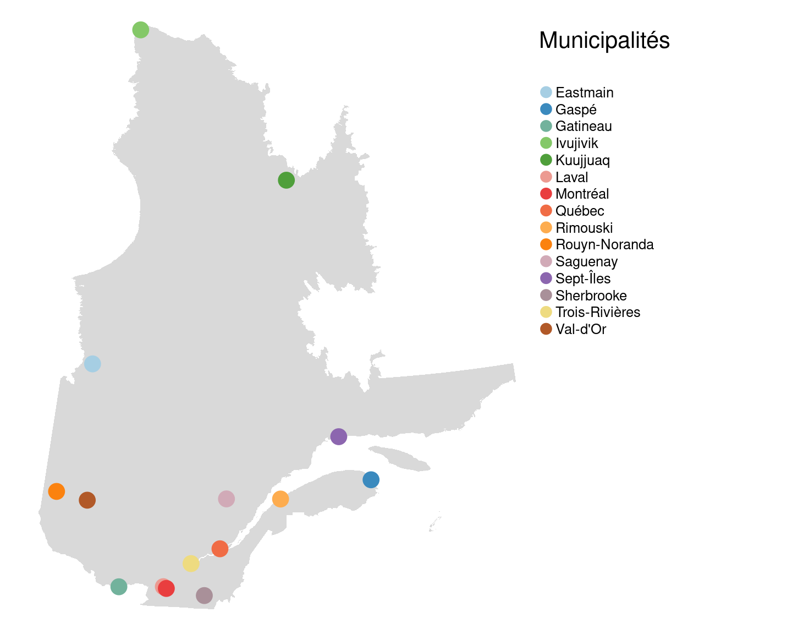
Jouer avec la distribution des classes
format_carte<-tm_layout(frame = FALSE, legend.position = c(0.67,0.04), legend.title.size = 0.8, legend.format=c(text.align="right"),legend.bg.color = "white", legend.frame = "black")
Efixed<-tm_shape(E)+
tm_raster(title = "Élévation(m)",palette=pal.elevation(10), style="fixed", breaks = c(0,100,200,300,400,500,600,700,800,900,1000,1600))+
format_carte
Equant<-tm_shape(E)+
tm_raster(title = "Élévation(m)",palette=pal.elevation(10), style="quantile")+format_carte
tmap_arrange(Efixed,Equant)6.1.11 Carte avec symboles proportionnels
tm_symboles
tm_shape(Q)+
tm_polygons(col="NUM_REG", legend.show=FALSE) +
tm_style("bw") +
#tm_layout("Population des régions administratives")+
tm_symbols(col="black", size = "ATot_T", legend.size.show = TRUE, legend.size.is.portrait = TRUE, title.size = "Population")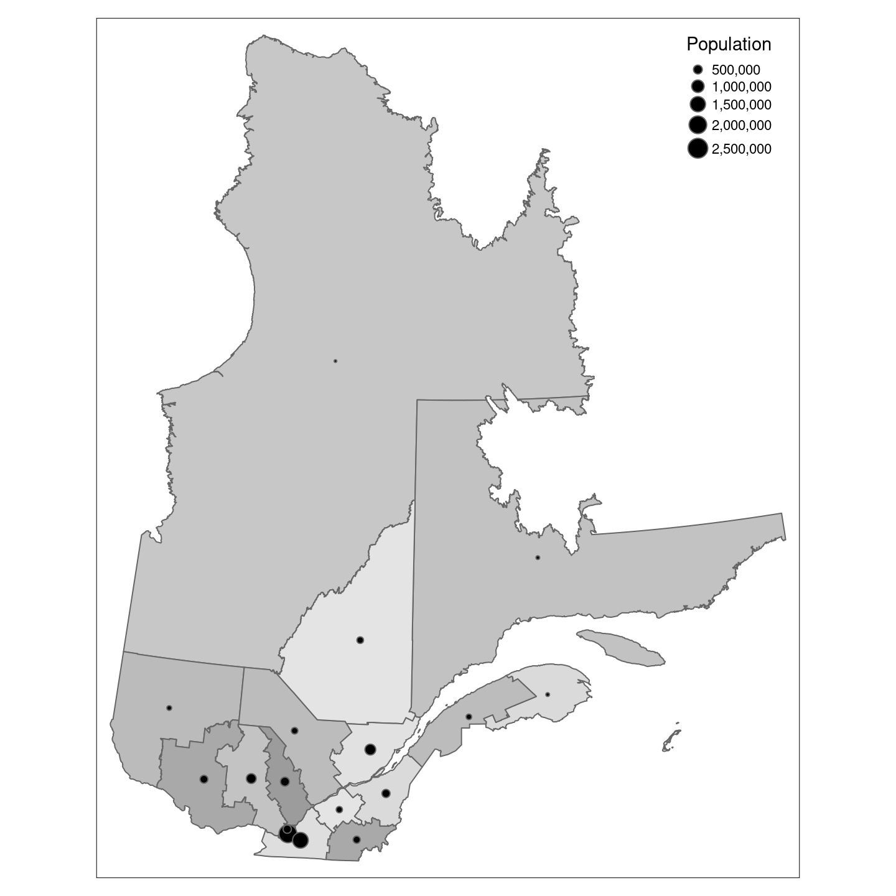 Note: lorsqu’on veut la legende de certains elements seulement, on met FALSE dans celle qu’on veut pas. Par defaut le symbole est 21, mais on peut mettre autres choses. http://www.sthda.com/french/wiki/ggplot2-types-de-points-logiciel-r-et-visualisation-de-donnees
6.1.11.0.1 Mettre deux légendes
tm_shape(Q)+tm_polygons(col="NOM_REG", palette="Set1", border.col = "darkgrey", title ="Régions administratives") +
tm_symbols(size = "ATot_T", border.col = "grey", col="black", scale = 2, legend.size.show = TRUE, legend.size.is.portrait = FALSE, sizes.legend.labels = c("500","1000","1500","2000","2500"), title.size ="Population (en milliers)")+
tm_layout(frame = FALSE, legend.outside = TRUE, legend.stack = "vertical", legend.title.fontface = "bold" ) 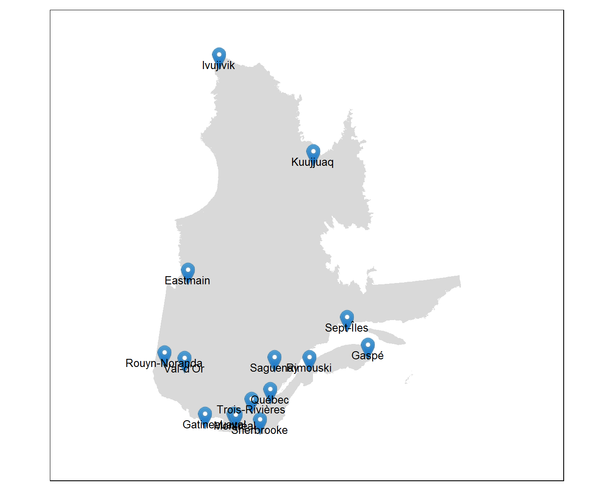
tm_bubbles
Bubbles: rayon et couleur
FAire le calcul du ratio d’enfant.
Q$Pop_prop_enfant<-Q$A0.14_T/Q$ATot_Ttm_shape(Q)+
tm_polygons(col="NUM_REG", legend.show=FALSE, palette = "Greys") +
#tm_layout("Population des régions administratives")+
#tm_bubbles(size ="Pop_prop_enfant", sizes.legend=seq(0.1, 0.27, by=0.02), col= "ATot_T" , style = "quantile", legend.size.show = TRUE, legend.size.is.portrait = TRUE)
tm_bubbles(size = "ATot_T" , col= "Pop_prop_enfant" , style = "quantile", scale = 2, border.col = "black", border.lwd
= .5,legend.size.show = TRUE, legend.size.is.portrait = FALSE, title.size ="Population (en milliers)", title.col = "Proportion d'enfants (0-14 ans)", sizes.legend.labels = c("500","1000","1500","2000","2500"))+
#tm_layout(frame = FALSE, legend.outside = TRUE, legend.outside.position = "bottom", legend.stack = "horizontal")
tm_layout(frame = FALSE, legend.outside = TRUE, legend.title.size =1)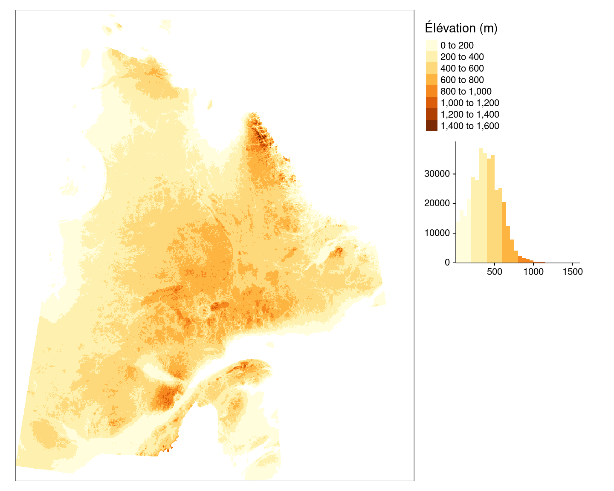
6.1.12 Cartes Choroplèthes
Expliquer breaks et n. (comme pour raster)
Q1 = tm_shape(Q)+tm_polygons(col="Pop_prop_enfant")
#Q2 = tm_shape(Q)+tm_polygons(col="Pop_prop_enfant", breaks = seq(0.1, 0.3, by=0.02))
Q2 = tm_shape(Q)+tm_polygons(col="Pop_prop_enfant", breaks = c(0.1, 0.14, 0.15, 0.16, 0.18, 0.3))
Q3 = tm_shape(Q)+tm_polygons(col="Pop_prop_enfant", n=2)
tmap_arrange(Q1,Q2,Q3)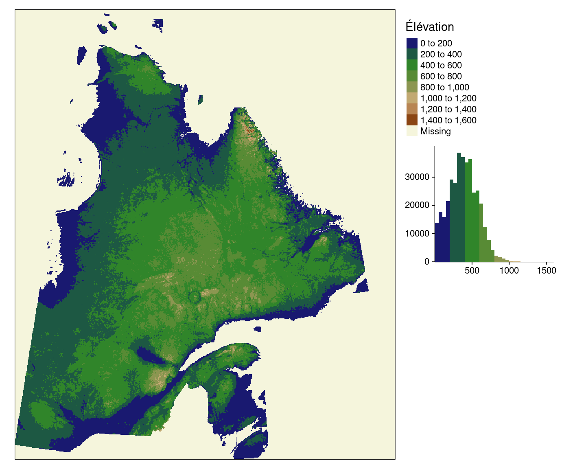
Données COVID
Lire les données: cas cumulés de COVID en date du 18 janvier 2021 par région socio-sanitaire.
chemin<-"D:/votrechemin/SCI1031/Module6/Donnees/"
nom_du_fichier <- paste(chemin, "COVID/QC_Covid_210118.shp", sep = "")
Q_covid <- st_read(nom_du_fichier)Reading layer `QC_Covid_210118' from data source
`/home/kc/git/inSileco/sci1031/Module6/data/COVID/QC_Covid_210118.shp'
using driver `ESRI Shapefile'
Simple feature collection with 16 features and 3 fields
Geometry type: MULTIPOLYGON
Dimension: XY
Bounding box: xmin: -830300 ymin: 118000 xmax: 783300 ymax: 2091000
Projected CRS: NAD83 / Quebec LambertComme pour la proportion d’enfants, on veut la densité de cas: la proportion de cas par rapport à la population totale d’une région socio-sanitaire
Q_covid$prop_cas<-(Q_covid$Cs_cmls)/(Q_covid$ATot_T)Comparaison nombre vs proportion
Q_nombre<-tm_shape(Q_covid)+tm_polygons(col="Cs_cmls", title = "Nombre de cas")
Q_prop<-tm_shape(Q_covid)+tm_polygons(col="prop_cas", title = "Proportion de cas")
tmap_arrange(Q_nombre,Q_prop)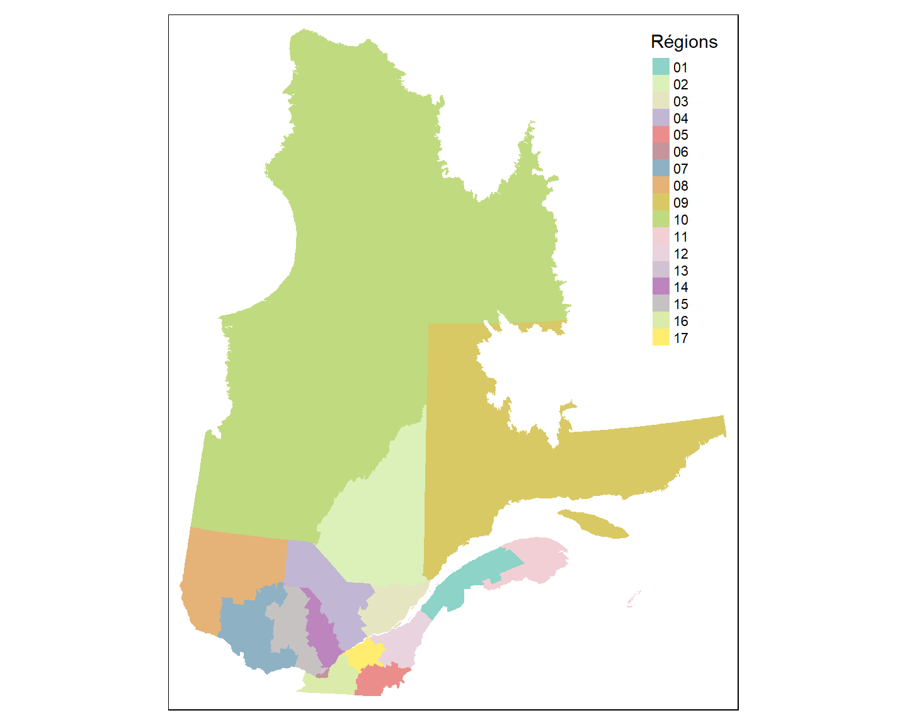
Expliquer le sens de chaque style. Voir: https://bookdown.org/nicohahn/making_maps_with_r5/docs/tmap.html#static-maps-with-tmap
format_carte <-tm_layout(legend.text.size = 0.55)
Q_quantile<-tm_shape(Q_covid)+tm_polygons(col="prop_cas", style = "quantile", title = "Quantile")+format_carte
Q_jenks<-tm_shape(Q_covid)+tm_polygons(col="prop_cas", style = "jenks", title = "Jenks")+format_carte
Q_pretty<-tm_shape(Q_covid) + tm_polygons(col="prop_cas", style = "pretty", title = "Pretty")+format_carte
tmap_arrange(Q_quantile,Q_jenks,Q_pretty)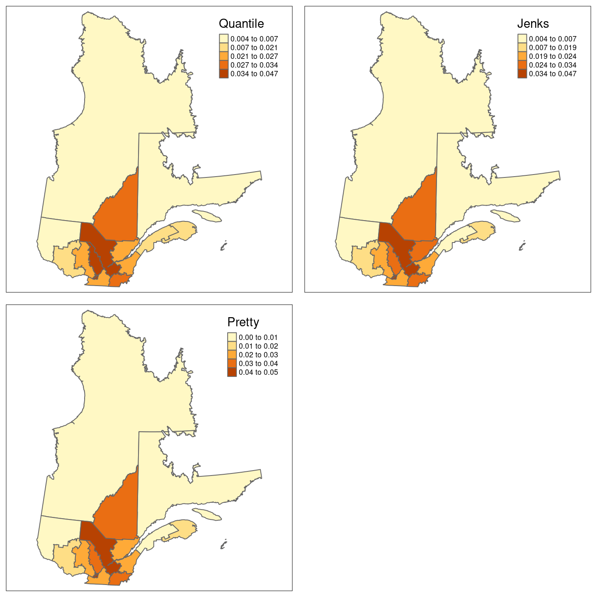
C’est souvent en regardant la distribution des données qu’on peut déterminer la meilleure classification pour représenter nos données EXEMPLE DE MELANIE ou alors faire ça au début.
6.1.13 Cartes à panneau multiple
Qu’est-ce qu’un facet?
Représenter chaque region individuellement
tm_shape(Q_covid)+tm_polygons(col="prop_cas", style = "quantile", legend.is.portrait = FALSE)+
tm_facets(by="NOM_REG", nrow =4, scale.factor = 5)+
tm_layout(panel.label.height=2, panel.label.size = 0.9, legend.show = FALSE)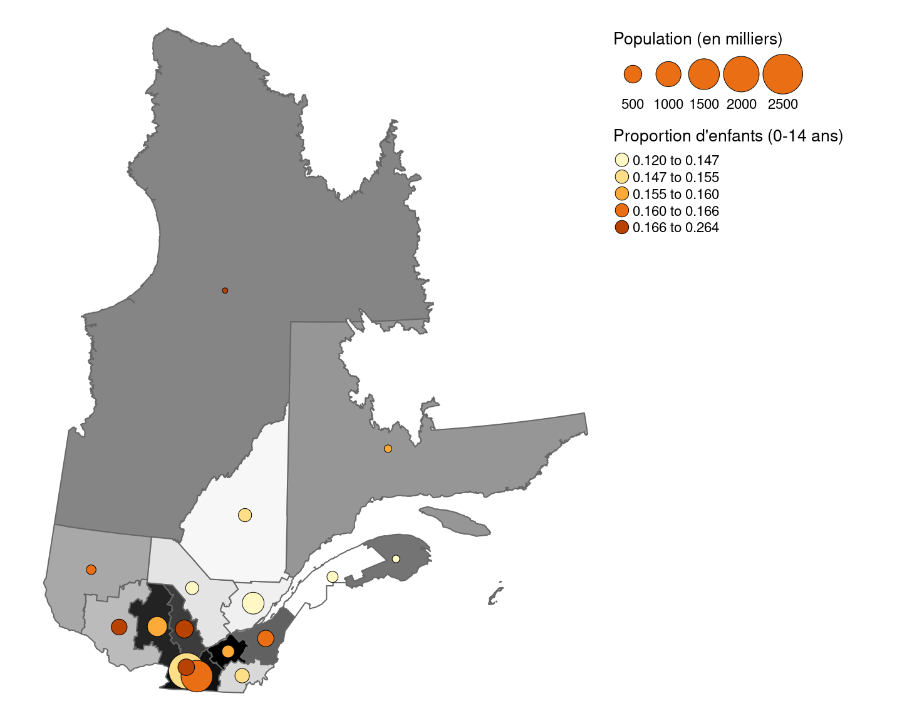
Il est possible de jouer avec les couleurs, le font, le cadre des panels en utilisant les argument panel.label.size, fontface, bg.color de la fonction tm_layout https://rdrr.io/cran/tmap/man/tm_layout.html.
6.1.14 Cartes avec encadré
Prenons une section de la carte d’élévation autour de la région de l’Outaouais
# Boite basee sur les limites de Q_Outaouais
rectangle<-extent(-719204,-479847,182366,454979)
# Utiliser ce rectangle pour sélectionner une région à l'intérieur de la carte d'élévation
G<-crop(E,rectangle)
# Transformer les contours de ce rectangle en polygone grâce à la bibliothèque tmaptools
library(tmaptools)
Gpoly<-bb_poly(G)format_carte<-tm_layout(frame = FALSE, legend.position = c(0.74,0.32), legend.title.size = 0.8, legend.bg.color = "white", legend.frame = "black")
# Définir la carte principale
Map_raster<-tm_shape(G)+tm_raster(title = "Élévation (m)", palette= pal.elevation(5))+format_carte+
tm_scale_bar(position=c("left","bottom"), text.size = 0.8)
# Définir l'encadré où le rectangle est superposé à la carte générale du Québec
Map_inset<-tm_shape(Q)+tm_polygons()+
tm_shape(Gpoly)+tm_borders(lw=2, col="red")
# Utilisation de la fonction viewport de la bibliothèque grid
library(grid)
Map_raster
print(Map_inset, vp=viewport(0.67,0.17,width=0.3, height=0.3))